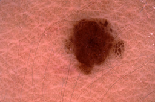
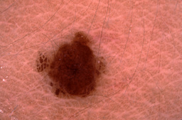

Background and Motivation
In this section we will discuss the concept of image augmentation in general. In particular we will introduce some terminology and useful definitions.
What is Image Augmentation?
The term data augmentation is commonly used to describe the process of repeatedly applying various transformations to some dataset, with the hope that the output (i.e. the newly generated observations) bias the model towards learning better features. Depending on the structure and semantics of the data, coming up with such transformations can be a challenge by itself.
Images are a special class of data that exhibit some interesting properties in respect to their structure. For example do the dimensions of an image (i.e. the pixel) exhibit a spatial relationship to each other. As such, a lot of commonly used augmentation strategies for image data revolve around affine transformations, such as translations or rotations. Because images are such a popular and special case of data, they deserve their own sub-category of data augmentation, which we will unsurprisingly refer to as image augmentation.
The general idea is the following: if we want our model to generalize well, then we should design the learning process in such a way as to bias the model into learning such transformation-equivariant properties. One way to do this is via the design of the model itself, which for example was idea behind convolutional neural networks. An orthogonal approach to bias the model to learn about this equivariance - and the focus of this package - is by using label-preserving transformations.
Label-preserving Transformations
Before attempting to train a model using some augmentation pipeline, it's a good idea to invest some time in deciding on an appropriate set of transformations to choose from. Some of these transformations also have parameters to tune, and we should also make sure that we settle on a decent set of values for those.
What constitutes as "decent" depends on the dataset. In general we want the augmented images to be fairly dissimilar to the originals. However, we need to be careful that the augmented images still visually represent the same concept (and thus label). If a pipeline only produces output images that have this property we call this pipeline label-preserving.
Example: MNIST Handwritten Digits
Consider the following example from the MNIST database of handwritten digits [MNIST1998]. Our input image clearly represents its associated label "6". If we were to use the transformation Rotate180 in our augmentation pipeline for this type of images, we could end up with the situation depicted by the image on the right side.
using Augmentor, MLDatasets
input_img = MNIST.convert2image(MNIST.traintensor(19))
output_img = augment(input_img, Rotate180())Input (input_img) | Output (output_img) |
|---|---|
 |  |
To a human, this newly transformed image clearly represents the label "9", and not "6" like the original image did. In image augmentation, however, the assumption is that the output of the pipeline has the same label as the input. That means that in this example we would tell our model that the correct answer for the image on the right side is "6", which is clearly undesirable for obvious reasons.
Thus, for the MNIST dataset, the transformation Rotate180 is not label-preserving and should not be used for augmentation.
Example: ISIC Skin Lesions
On the other hand, the exact same transformation could very well be label-preserving for other types of images. Let us take a look at a different set of image data; this time from the medical domain.
The International Skin Imaging Collaboration [ISIC] hosts a large collection of publicly available and labeled skin lesion images. A subset of that data was used in 2016's ISBI challenge [ISBI2016] where a subtask was lesion classification.
Let's consider the following input image on the left side. It shows a photo of a skin lesion that was taken from above. By applying the Rotate180 operation to the input image, we end up with a transformed version shown on the right side.
using Augmentor, ISICArchive
input_img = get(ImageThumbnailRequest(id = "5592ac599fc3c13155a57a85"))
output_img = augment(input_img, Rotate180())Input (input_img) | Output (output_img) |
|---|---|
|  |  |
After looking at both images, one could argue that the orientation of the camera is somewhat arbitrary as long as it points to the lesion at an approximately orthogonal angle. Thus, for the ISIC dataset, the transformation Rotate180 could be considered as label-preserving and very well be tried for augmentation. Of course this does not guarantee that it will improve training time or model accuracy, but the point is that it is unlikely to hurt.
- MNIST1998LeCun, Yan, Corinna Cortes, Christopher J.C. Burges. "The MNIST database of handwritten digits" Website. 1998.
- ISIChttps://isic-archive.com/
- ISBI2016Gutman, David; Codella, Noel C. F.; Celebi, Emre; Helba, Brian; Marchetti, Michael; Mishra, Nabin; Halpern, Allan. "Skin Lesion Analysis toward Melanoma Detection: A Challenge at the International Symposium on Biomedical Imaging (ISBI) 2016, hosted by the International Skin Imaging Collaboration (ISIC)". eprint arXiv:1605.01397. 2016.